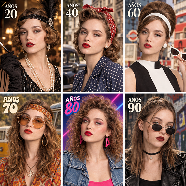

Foto historicas con IA

Manual de Uso Rápido
1
📋 Copia el Prompt con 1 Clic
Presiona el botón oscuro Copiar en el bloque inferior para guardar toda la instrucción en la memoria de tu dispositivo.
2
✏️ Personaliza las Variables Entre Corchetes
Reemplaza [AÑO O DÉCADA] por el año que quieras (ej: 1880, 1920, 1985) y elige el sujeto: [HOMBRE / MUJER].
3
🚀 Pega y Genera en tu IA Favorita
Pégalo en Google Flow (Nano Banana 2 / OmniFlash 1.1). Si subes tu foto o video, la IA adaptará peinado, ropa, fondo y tecnología de cámara al año elegido.
Consejo Pro: Si utilizas tu propia foto de referencia, mantén activa la línea de "Mantén exactamente los rasgos faciales" para conservar tu identidad y no parecer otra persona.
¿Qué es?
Teletransporta a la persona de la foto a cualquier período histórico (años 20, época victoriana, años 60, años 80) adaptando iluminación analógica, grano de película y atuendos de época con parecido exacto.
¿Cómo usarlo?
- Abre Google Flow con el modelo Nano Banana 2 en formato 1:1 o 4:5.
- Sube la foto del usuario en el panel Ingredients (+ Add Image).
- Nombra la imagen como
Personaje 1para anclar la estructura facial y mirada real. - Indica el año o época histórica en el prompt y genera el retrato de época auténtico.
Cómo personalizar / Parámetros:
Edita [AÑO O DÉCADA, ej: 1985 / década de 1940 / 1880] y [UN HOMBRE / UNA MUJER] en la primera línea de la orden.
Prompt para copiar
Retrato individual de medio cuerpo de [UN HOMBRE / UNA MUJER], ambientado exactamente en el año [AÑO O DÉCADA, ej: 1985 / década de 1940 / 1880 / año 2000]. [SI SUBES TU FOTO: "Mantén exactamente los rasgos faciales, estructura ósea, ojos y forma de la cara de la persona de la imagen de referencia"]. Detalles de la época: - Peinado y arreglo personal: Peinado icónico y fidedigno del año [AÑO/DÉCADA] para [HOMBRE / MUJER] [si es mujer: maquillaje característico de la época; si es hombre: corte de cabello y vello facial acordes a la moda del año]. - Vestimenta: Ropa auténtica de época con textiles realistas, costuras, cortes y accesorios típicos de [AÑO/DÉCADA]. - Entorno y fondo: Un escenario realista y cotidiano de [AÑO/DÉCADA] (arquitectura, automóviles, carteles o decoración de interiores fidedigna de ese tiempo), con profundidad de campo natural. - Estilo visual y tecnología fotográfica: La imagen debe parecer capturada con la tecnología de cámara real de esa fecha (si es siglo XIX: daguerrotipo/ferrotipo en blanco y negro con textura antigua; si es 1940-1970: película clásica analógica en tono sepia o Kodachrome cálido; si son los 80s/90s: fotografía de 35mm con grano visible y flash directo suave; si es 2000: estética de cámara digital temprana o rollos desechables). Sin aspecto digital falso, iluminación natural acorde a la escena, texturas de piel hiperrealistas con poros visibles, sin cortes tipo collage, una sola fotografía cinematográfica e inmersiva.